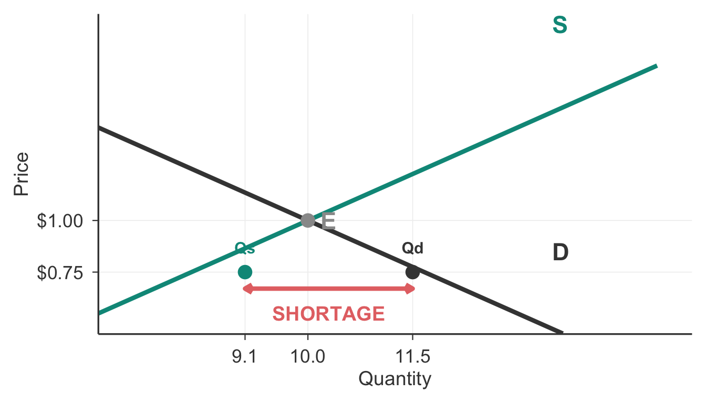
Chapter 3
University of Vermont
2026-01-01
Typical spring weekend: - Comfort Inn: $120 - Hilton Garden Inn: $150
Eclipse weekend (April 7-8, 2024): - Comfort Inn: $475 - Hilton Garden Inn: $860 - Many hotels: fully booked
What changed? Same hotels, same rooms, same city… dramatically different prices. Supply and demand in action.
Accommodation listings across Vermont were being booked months in advance:
Market Response Hotels didn’t build new rooms. They didn’t change amenities. They simply adjusted the price to match the surge in demand from eclipse viewers.
By the end of today’s class, you will be able to:
Define competitive markets and explain how supply and demand describe them
Distinguish between movements along curves versus shifts of curves
Identify the five factors that shift demand and five that shift supply
Find market equilibrium and explain how prices eliminate shortages and surpluses
Predict how price and quantity change when markets experience shocks
Core Skill The supply-demand framework is economics’ most powerful analytical tool. Master it, and you can explain everything from hotel prices to labor markets to cryptocurrency.
For now, we analyze competitive markets:
Characteristics:
Examples:
Why start here? Not all markets are competitive (we’ll study monopolies and oligopolies later), but competitive markets provide the clearest insights into how prices coordinate economic activity.
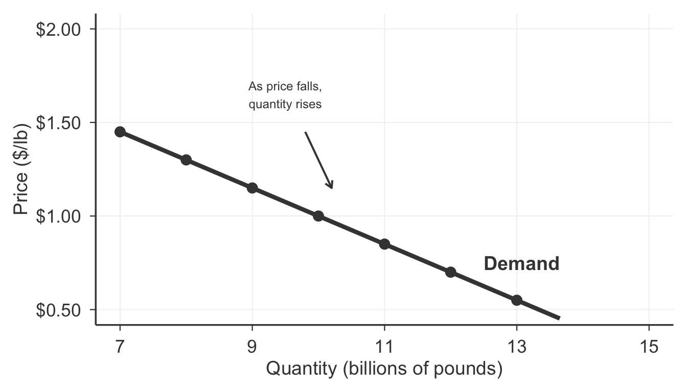
Law of Demand Higher prices → lower quantity demanded. The demand curve slopes downward.
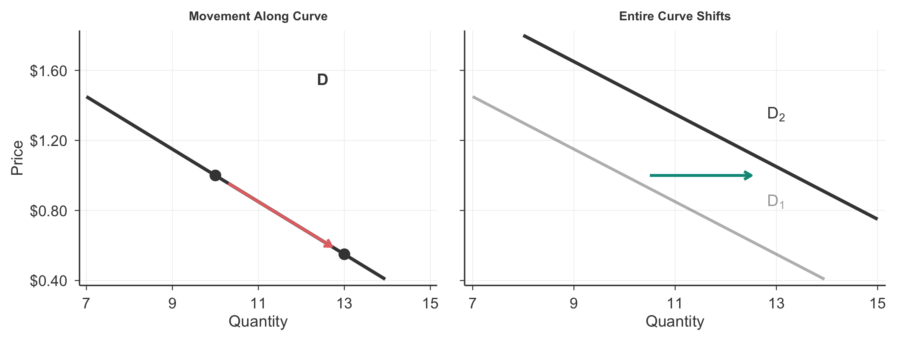
Pro Tip: If the changing variable is on the Y-axis (price), it’s a movement. Otherwise, it’s a shift!
Students often confuse these concepts. Here’s how to avoid errors:
❌ WRONG: “Price increased, so demand shifted” - ✓ CORRECT: “Price increased, so quantity demanded decreased” (movement along curve)
❌ WRONG: “Income rose, so quantity demanded increased” - ✓ CORRECT: “Income rose, so demand increased” (entire curve shifts)
Quick Test Ask yourself: “Did price change, or did something else change?” - Price changed → movement along the curve - Something else changed → shift of the entire curve
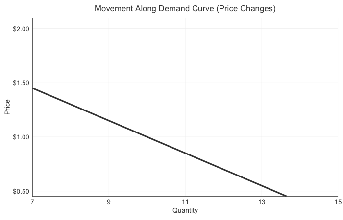
Animation: Movement along demand curve vs. shift of entire curve
T - Tastes and preferences
R - Related goods prices
I - Income
B - Buyers (number of consumers)
E - Expectations
These factors shift the entire curve
Price changes cause movements along the curve
Direction matters: increase vs. decrease in demand
Substitutes - Goods that can replace each other
Price of substitute ↑ → Demand ↑
Complements - Goods consumed together
Price of complement ↑ → Demand ↓
A new tax raises the price of gasoline. What happens to the demand for electric vehicles?
Demand for electric vehicles increases
Demand for electric vehicles decreases
Quantity demanded of electric vehicles increases
No change in demand for electric vehicles
Answer: (a) Gasoline and electric vehicles are substitutes. When the price of gasoline rises, consumers shift toward the substitute → demand for EVs increases (curve shifts right).
Normal Goods
Income ↑ → Demand ↑
Examples: - Restaurant meals - New cars - International travel - Organic produce
Most goods are normal goods
Inferior Goods
Income ↑ → Demand ↓
Examples: - Instant ramen - Used cars (vs. new) - Generic brands - Bus rides (vs. owning a car)
Budget substitutes we trade up from
Which are most likely to be inferior goods?
Store-brand cereal
Designer boots
Premium deodorant
Public bus rides
Answer: (a) and (d)
Store-brand cereal and bus rides are budget options that people typically replace with premium alternatives (name-brand cereal, personal vehicles) as income rises.
Consumer preferences change for many reasons:
Seasonal patterns - Winter → ↑ demand for coats, snow tires - Summer → ↑ demand for air conditioners, beach gear
Trends and fads - Stanley cups, fidget spinners, Pokémon cards - These create temporary demand spikes
New information - Health studies linking smoking to cancer → ↓ demand for cigarettes - Celebrity endorsements → ↑ demand for products
4. Expectations - Expect higher future prices → ↑ demand today (buy now!) - Expect lower future prices → ↓ demand today (wait for sale) - Expect higher future income → ↑ demand today
5. Number of Buyers - More consumers → ↑ demand - Population growth, new markets opening - Example: More babies → ↑ demand for diapers
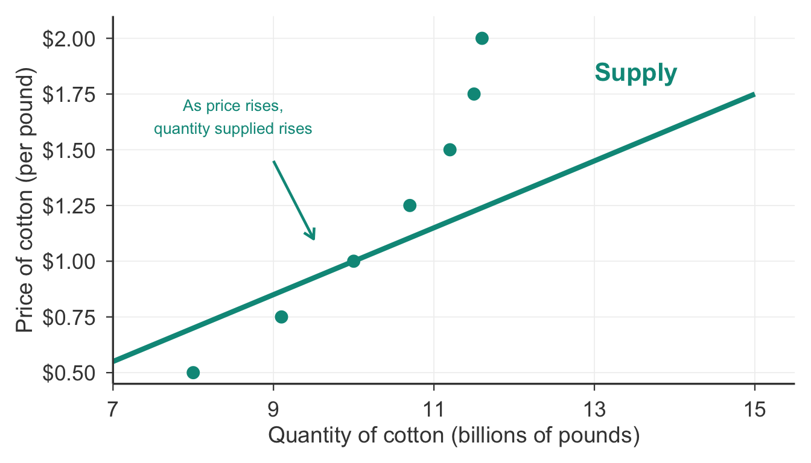
Law of Supply Higher prices → higher quantity supplied. The supply curve slopes upward.
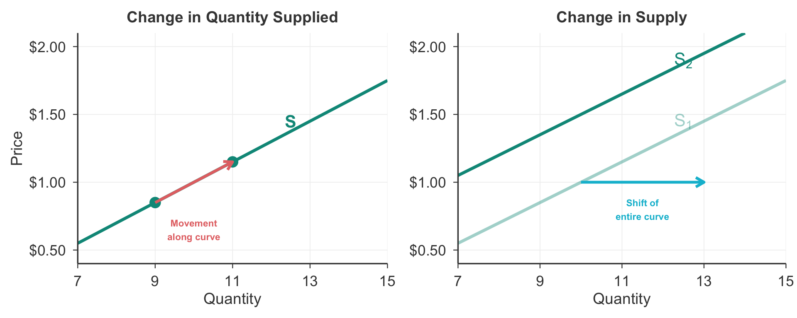
T - Technology
O - Other goods prices
N - Number of producers
E - Expectations
R - Resource costs (inputs)
Supply shifts when producers’ costs or profit opportunities change
Better technology, more producers, or lower input costs → ↑ supply
Higher input costs or fewer producers → ↓ supply
↓ Input Price → ↑ Supply
Lower production costs mean producers can profitably supply more at each price
Examples:
↑ Input Price → ↓ Supply
Higher production costs reduce profitable supply at each price
Examples:
Producers often can make multiple products (substitutes) or must make them together (complements)
Substitutes in Production
Complements in Production
A drought devastates corn crops. Farmers can grow either corn or soybeans on their land. What happens in the soybean market?
Supply of soybeans increases
Supply of soybeans decreases
Demand for soybeans increases
Quantity supplied of soybeans increases
Answer: (a) Corn and soybeans are substitutes in production. When corn crops fail, farmers switch their land to soybeans → supply of soybeans increases (shifts right).
Better technology lowers production costs:
Examples: - Precision agriculture: GPS-guided tractors → less waste, better yields - Industrial automation: robots → lower labor costs per unit - AI and machine learning: optimized logistics → reduced shipping costs
Key feature: Technology improvements are usually permanent
Result Better technology → ↓ costs → ↑ supply (shift right)
4. Expectations - Expect higher future prices → ↓ supply today (save inventory) - Expect lower future prices → ↑ supply today (sell now!) - Example: Oil companies withhold production when expecting price increases
5. Number of Producers - More sellers enter market → ↑ supply - Sellers exit market → ↓ supply - Entry/exit depends on profitability and barriers to entry - Example: Legal marijuana → hundreds of new producers entered market → ↑ supply
Green Mountain Solar knows the government is phasing out solar tax credits in two years. What supply shifter best describes this?
Input prices
Prices of related goods
Technology
Expectations
Number of sellers
Answer: (d) Expectations Anticipating less favorable conditions in the future affects production decisions today.
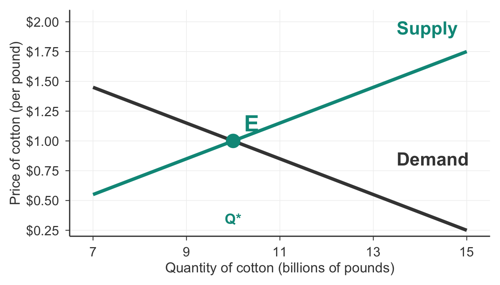
Equilibrium: Price where quantity demanded = quantity supplied. No shortage, no surplus.
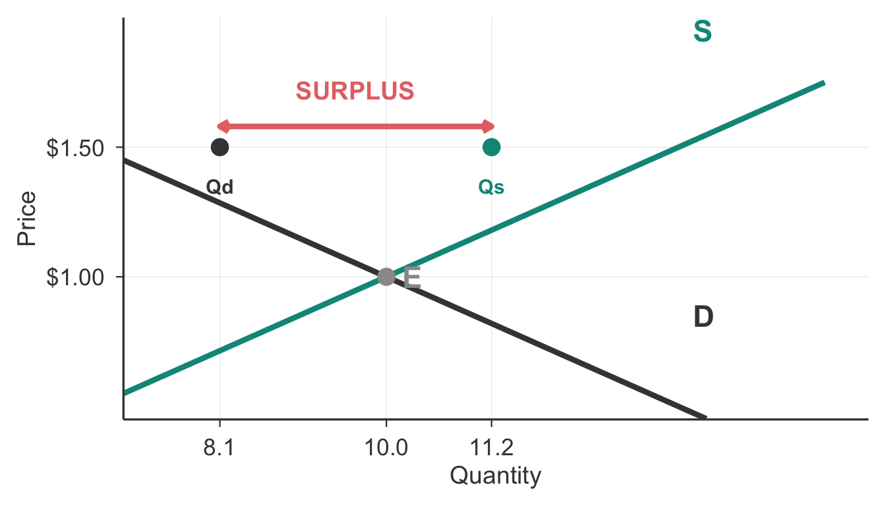
Surplus → Sellers lower prices to clear excess inventory → moves toward equilibrium

Shortage → Buyers bid prices up to secure scarce goods → moves toward equilibrium
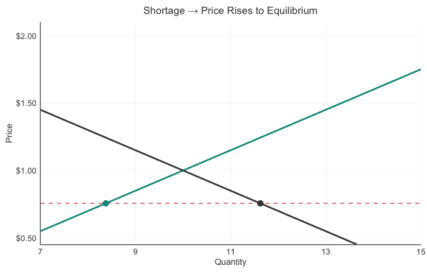
Animation: Market adjustment from shortage back to equilibrium
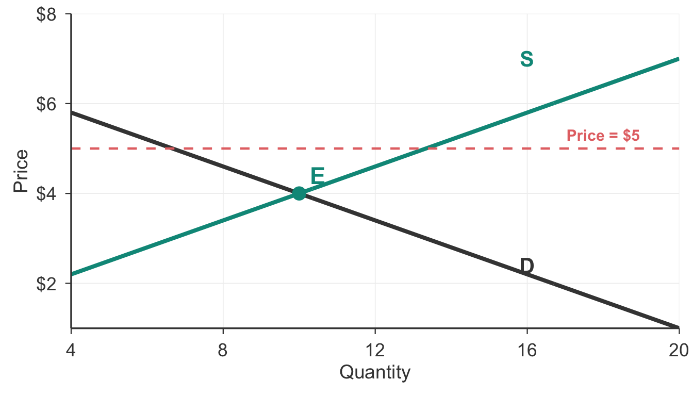
At $5, is there a shortage or surplus?
Answer: Surplus. At $5 (above equilibrium), Qs > Qd → excess supply.
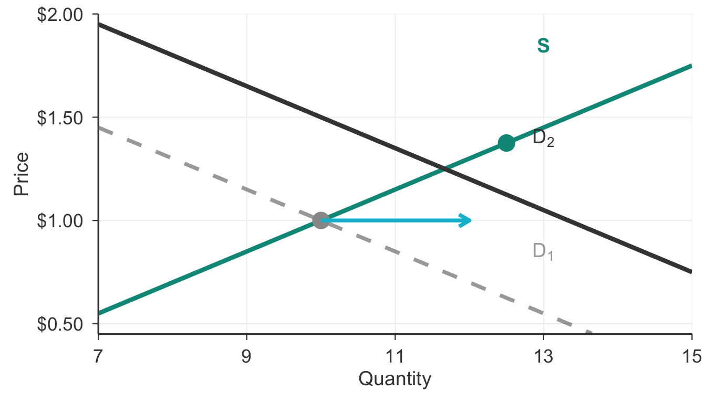
Result: Price ↑ and Quantity ↑ (Both certain)
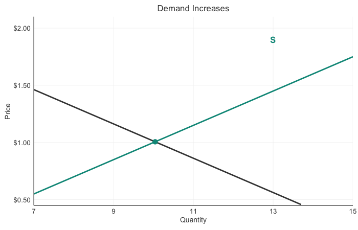
Dynamic visualization of demand increase
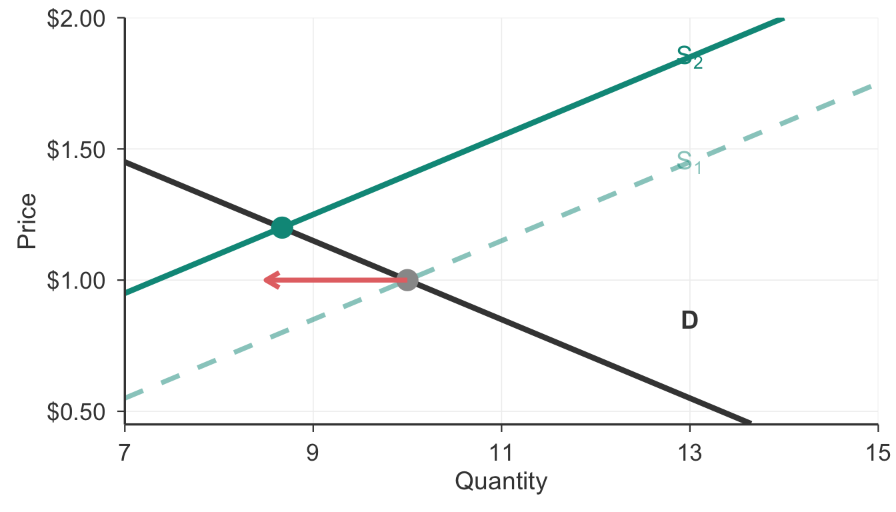
Result: Price ↑ and Quantity ↓ (Both certain)
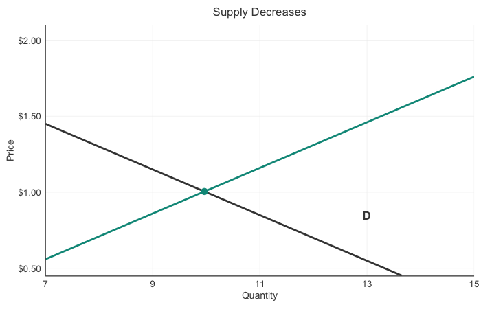
Dynamic visualization of supply decrease
If the cost of wood falls, what happens to equilibrium price and quantity in the violin market?
Think about: 1. Which curve shifts? (Supply or demand?) 2. Which direction? (Left or right?) 3. What happens to P* and Q*?
Answer: Wood is an input → ↓ input prices → ↑ supply (shift right) → ↓ P* and ↑ Q*
Example: iPhone launch
When Apple releases a new iPhone: 1. Consumer excitement → demand increases (curve shifts right) 2. Apple ramps up production → supply increases (curve shifts right)
What happens to equilibrium?
Both shifts push quantity in the same direction: - ↑ Demand → Q ↑ - ↑ Supply → Q ↑ - Result: Q ↑ (certain)
But shifts push price in opposite directions: - ↑ Demand → P ↑ - ↑ Supply → P ↓ - Result: P ? (ambiguous)
General Rule When both curves shift, if the effects on P or Q work in the same direction → certain change. If opposite directions → ambiguous (depends on relative magnitudes).
Interactive Demo:
🎯 Launch Interactive Supply & Demand Simulator
Use sliders to shift curves and see market effects decomposed in real-time!
How much does a 4oz bottle of pure vanilla extract cost?
$4
$7
$10
$18
$20
What happened:
Why:
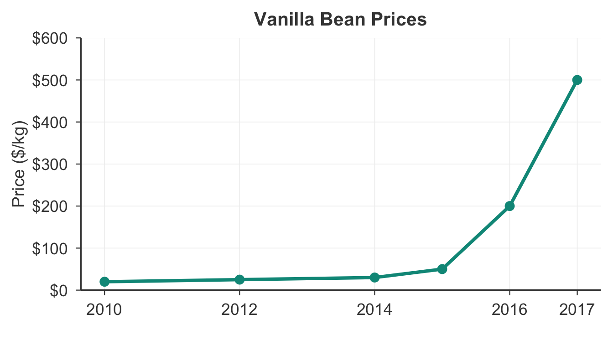
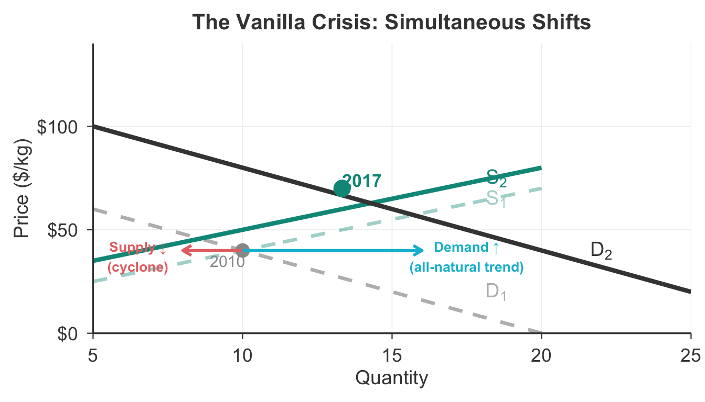
Supply ↓ and Demand ↑ → Price ↑↑ (certain), Quantity ? (ambiguous, but increased)
By 2019-2020, vanilla prices began falling:
Why?
High prices incentivized production → farmers planted more vanilla → ↑ supply
Substitution → some manufacturers switched back to synthetic vanillin → ↓ demand
Recovery → Madagascar crop recovered → ↑ supply
Classic Market Dynamics High prices signal scarcity → encourage production and substitution → prices adjust back toward equilibrium
Demand curves slope down, supply curves slope up
Movements happen along curves when price changes; shifts happen when non-price factors change
TRIBE shifts demand: Tastes, Related goods, Income, Buyers, Expectations
TONER shifts supply: Technology, Other goods, Number of producers, Expectations, Resource costs
Equilibrium balances Qd and Qs; surpluses and shortages push price toward equilibrium
Price and quantity changes depend on which curve shifts and in what direction
Garden gnomes regain popularity. What happens to equilibrium?
P ↑, Q ↑
P ↑, Q ↓
P ↓, Q ↑
P ↓, Q ↓
Answer: (a) Tastes → demand shifts right → P ↑ and Q ↑
This is the type of reasoning you’ll use throughout the course!
Chapter 6: Elasticity
Before Next Class - Review TRIBE and TONER - Practice: For each news story you see this week, ask: “Which curve shifted? Which direction?”
Questions?